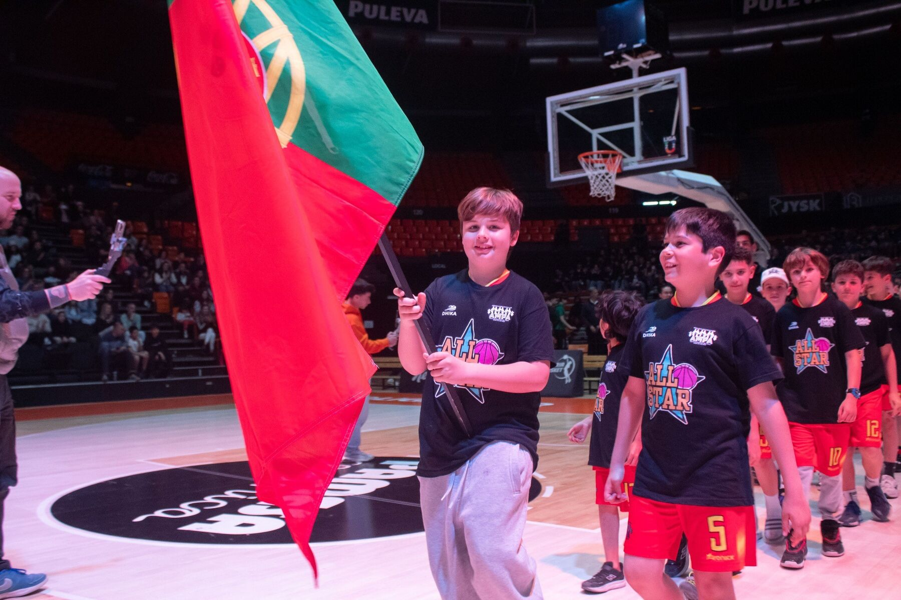
Seis sedes, quince pistas y un gran escenario central para vivir la Valencia International Cup.
La Valencia International Cup 2027 evoluciona hacia un modelo de competición distribuido en diferentes sedes, manteniendo un gran escenario central y sumando pabellones preparados para concentrar partidos, equipos y público durante toda la jornada.
Seis instalaciones de baloncesto repartidas por Valencia y su área metropolitana, pensadas para vivir cada partido de cerca.
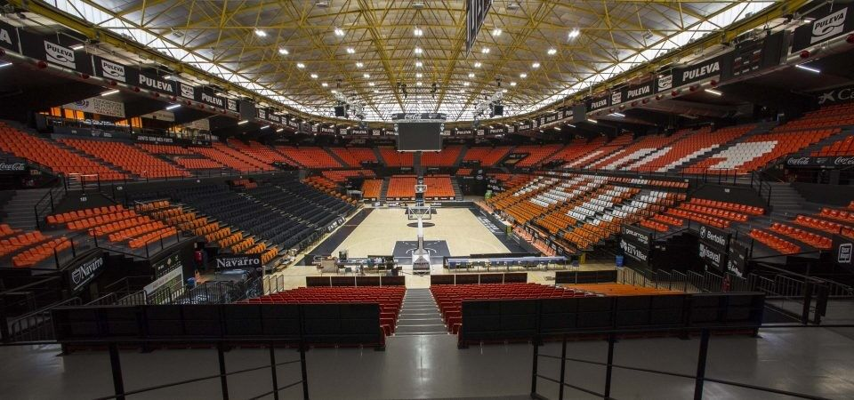
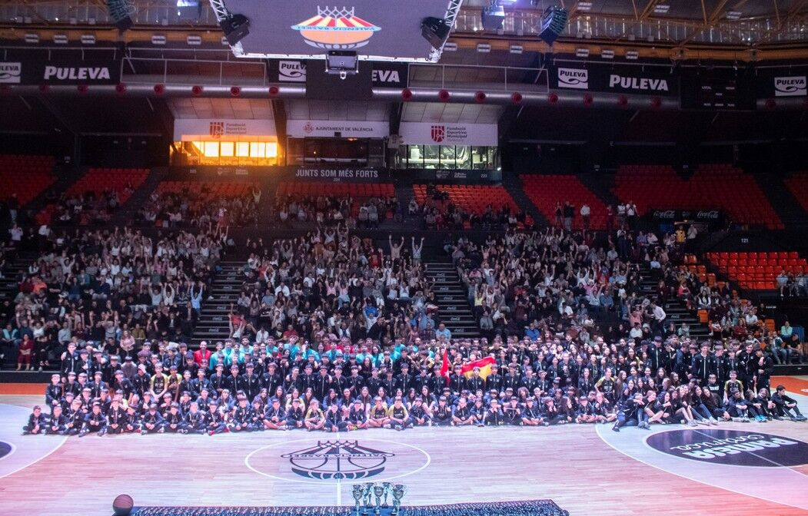
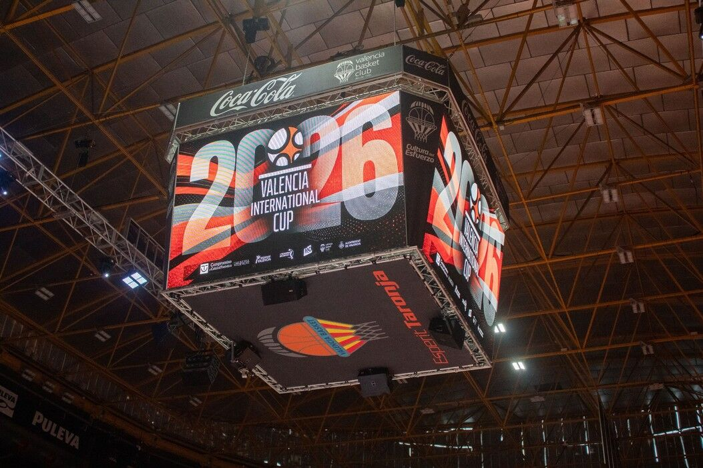
El gran escenario de la VIC
Uno de los grandes escenarios del baloncesto valenciano y una sede ligada a la historia de la Valencia International Cup. Un pabellón para vivir los momentos más especiales del torneo con ambiente de gran competición.
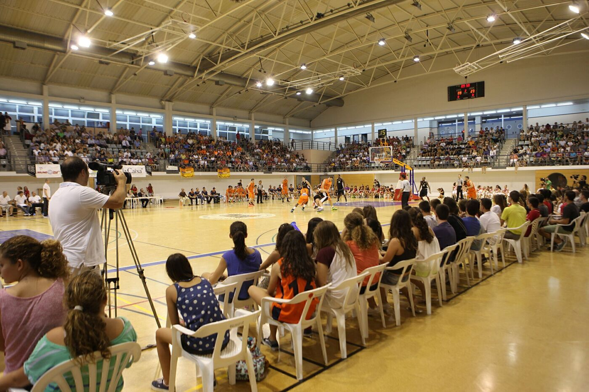
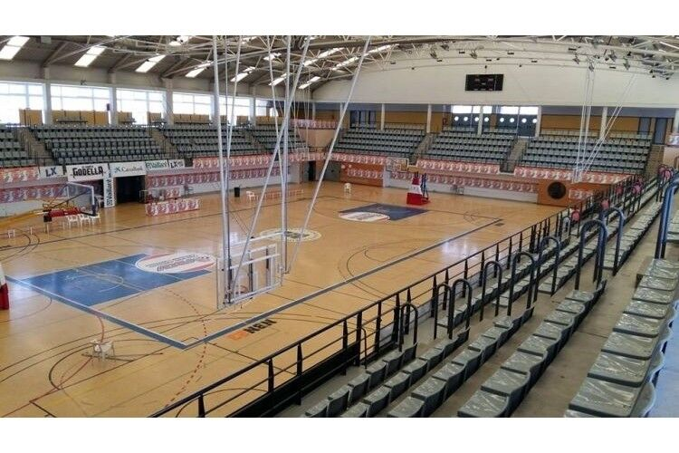
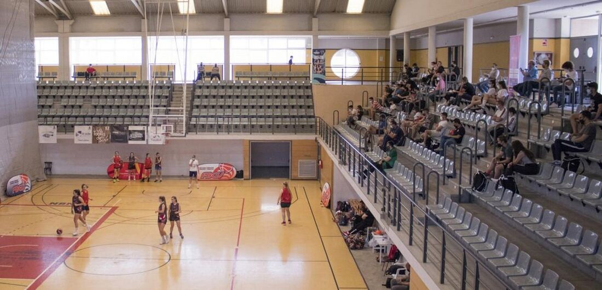
Tradición y ambiente de competición
Una sede con fuerte tradición de baloncesto en el área de Valencia. Su grada próxima a la pista y su configuración permiten crear un ambiente intenso y cercano durante las jornadas de competición.
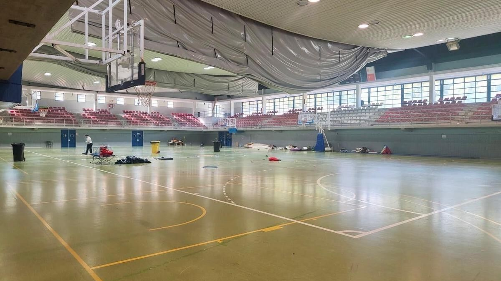
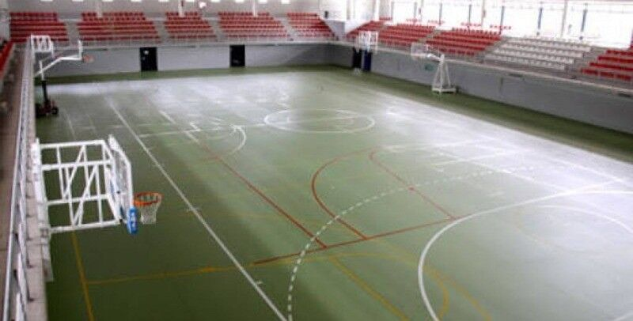
Amplitud y capacidad para competir
Una instalación de gran formato que permite concentrar diferentes partidos en un mismo espacio. Su amplitud, gradas y configuración multipista la convierten en uno de los principales núcleos operativos del nuevo modelo VIC 2027.
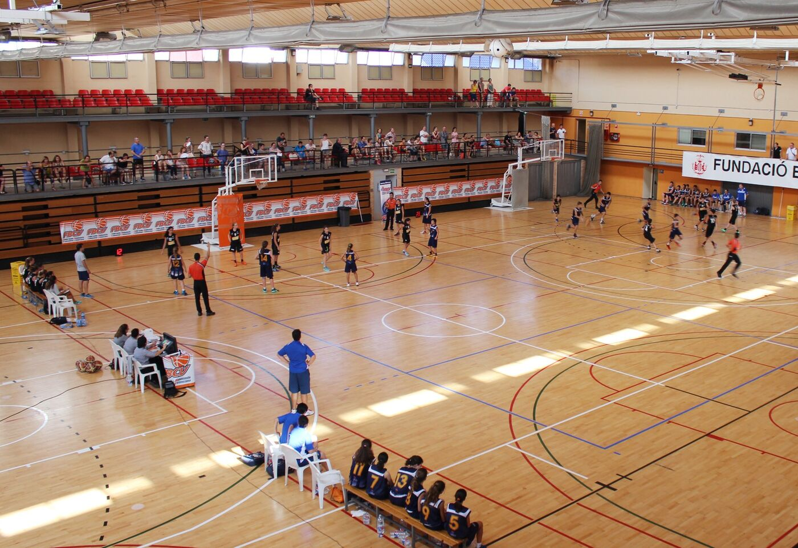
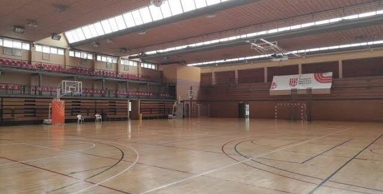
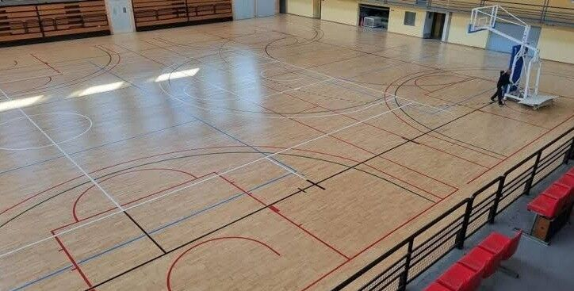
3 pistas. Un mismo escenario.
Una sede versátil e integrada en la ciudad de Valencia, preparada para concentrar varios partidos y equipos en un mismo espacio. Su configuración favorece una dinámica de torneo continua durante toda la jornada.
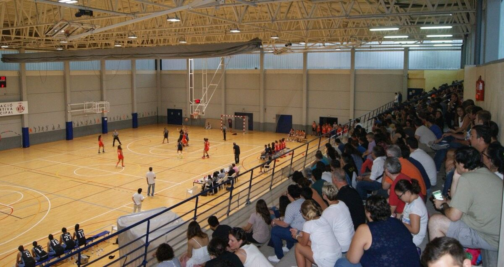
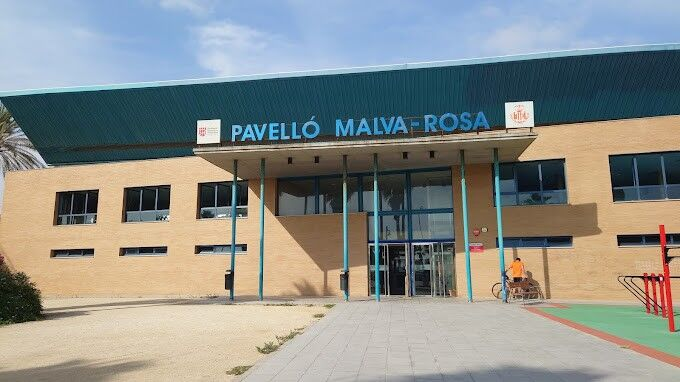
Baloncesto y competición en Valencia
Una sede preparada para vivir el baloncesto de cerca, con gradas junto a la pista y una ubicación plenamente urbana. Un punto de competición que combina funcionalidad, proximidad del público y presencia dentro de la ciudad de Valencia.
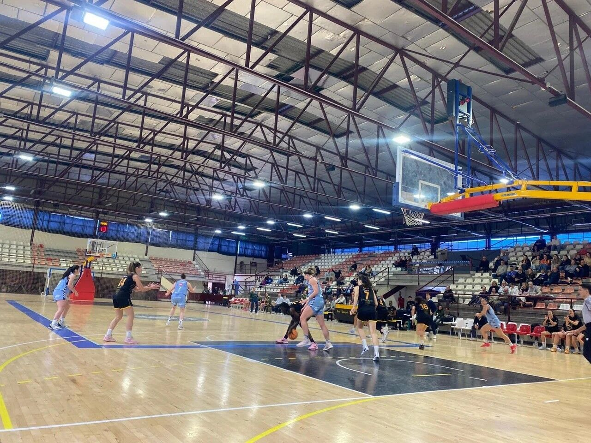
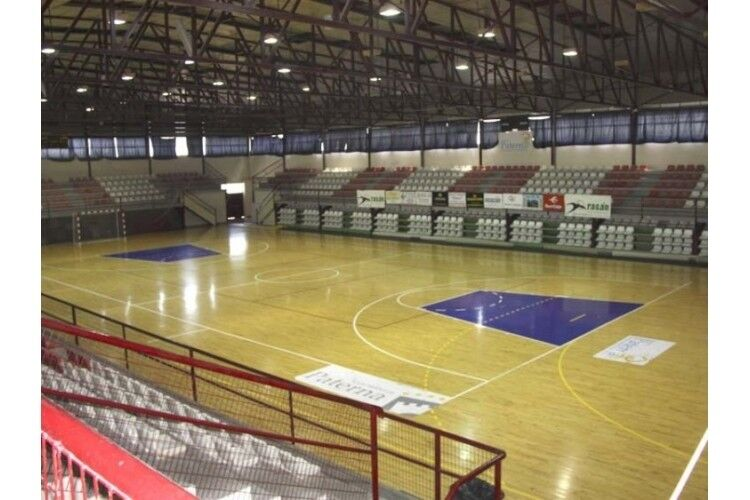
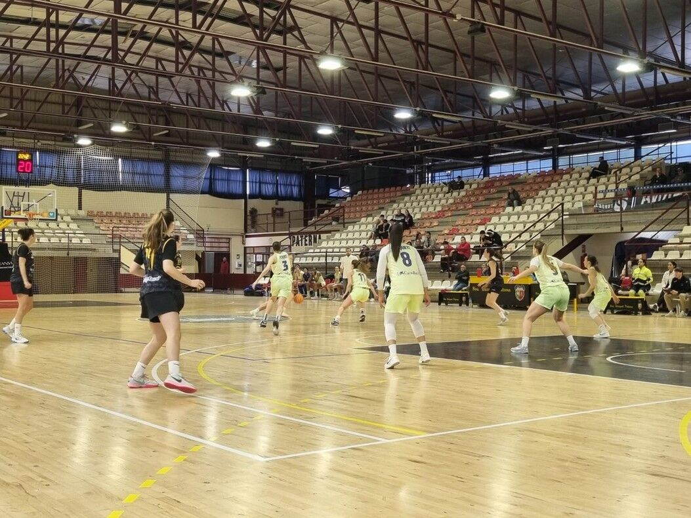
Capacidad y ambiente de baloncesto
Un complejo deportivo con tres pistas de competición y un pabellón principal de parquet con amplia grada. Su capacidad y configuración permiten concentrar equipos, partidos y público, convirtiéndolo en un núcleo sólido para el modelo multisede VIC 2027.
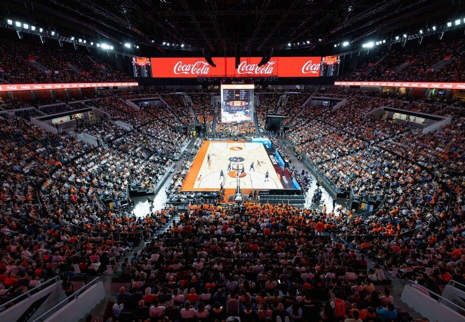
Durante las fechas del torneo, los equipos podrán completar su experiencia en Valencia asistiendo a un partido oficial en el Roig Arena, con entradas gestionadas a través de la organización VIC y sujetas a calendario y disponibilidad.
Valencia Basket vs Bàsquet Girona, 28 de marzo a las 17:00 h, al finalizar el acto de clausura del torneo. Reserva las entradas con antelación para aprovechar el descuento para equipos VIC.
Recorrido por el universo Valencia Basket, con acceso a zonas de trabajo e interior del bowl. Reserva con antelación para aprovechar el descuento para equipos VIC.
Experiencia complementaria · El Roig Arena no es sede de competición VIC 2027. Actividades sujetas a calendario, disponibilidad y condiciones operativas del recinto.
Gracias por conocer nuestras sedes. Escríbenos para inscribir a tu equipo y vivir la Valencia International Cup 2027 en primera persona.
R&O Eventos Deportivos · Dirección deportiva VIC 2027
+34 670 386 418 · info@valenciabasketcup.com
La organización se reserva el derecho a modificar, sustituir o ampliar las sedes indicadas en esta página.